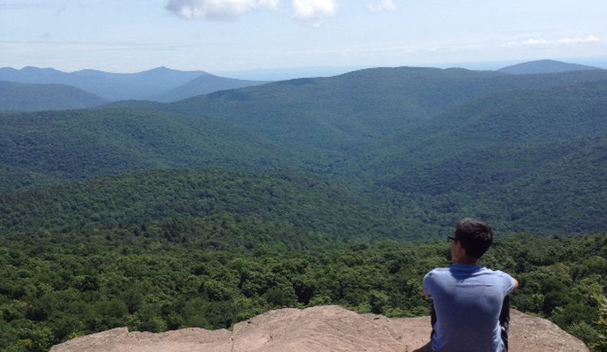

Electrical and Computer Engineering student at the University of Virginia
Electrical and Computer Engineering
University of Virginia, '19 '21
I am a graduate student in the Electrical and Computer Engineering Department at the University of Virginia (UVa) planning on graduating with a Masters in the spring of 2021. In May 2019, I graduated from UVa with a B.S. in Computer Engineering, a B.S. in Electrical Engineering, and a minor in Design Integration through the Technology Leaders Program. My main interests lie in the fields of embedded systems design, robotics, mechatronics, hardware and software engineering.
While at UVA, I have been part of the Technology Leaders Program (TLP), the Society of Hispanic Professional Engineers (SHPE), the Mechatronics and Robotics Society (MARS) and the Institute of Electrical and Electronics Engineers (IEEE). I was also an undergraduate research assistant at the Robust Low Power VLSI Research Lab, and the UVA Center for Wireless Health. Lastly, I was an undergraduate teaching assistant for Digital Logic Design (ECE 2330), Probability (APMA 3100), and Computer Architecture and Design (ECE 4435/6435).
I am very passionate about engineering and design, but in my free time I enjoy sketching, making art, hiking and playing sports.
